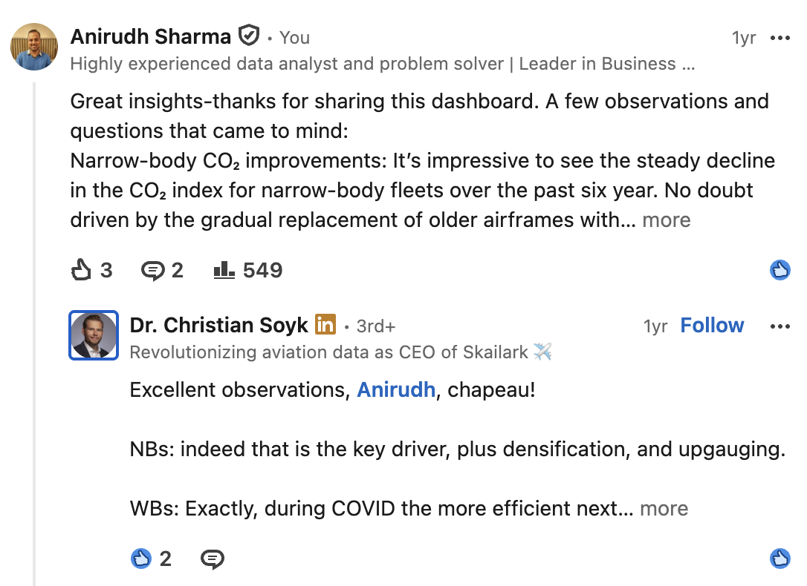
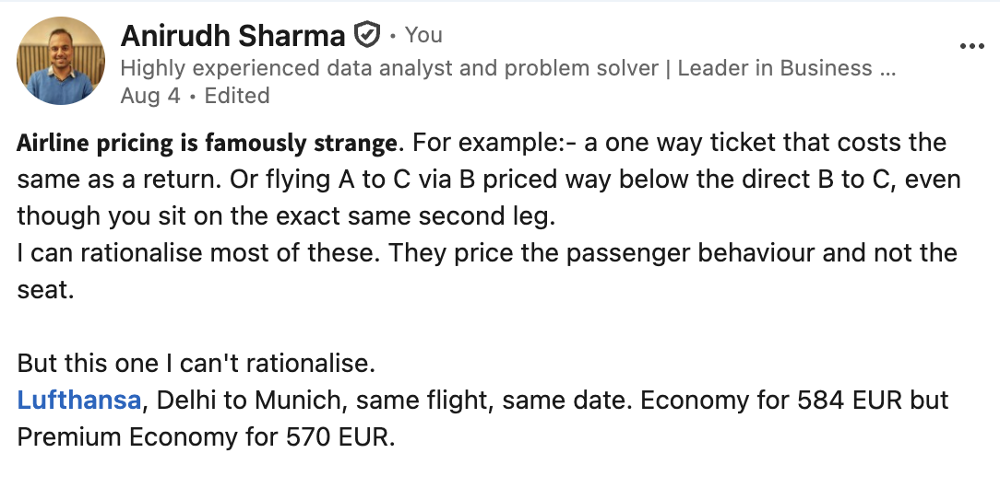
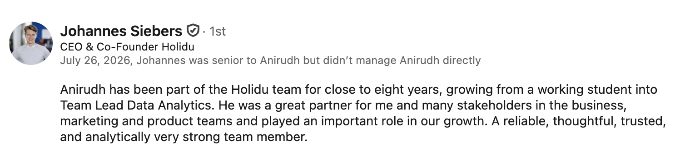
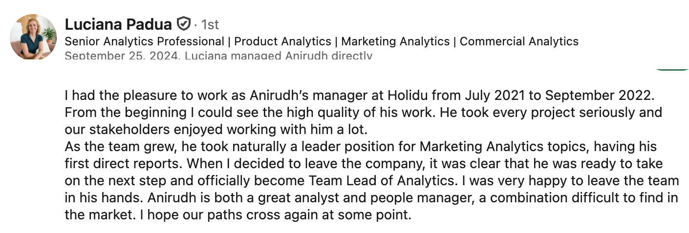

Leg 1
What I bring
I work as both the bird and the frog. The bird sees the whole landscape and sets direction with leadership. The frog sits down in the data and checks every detail. I move between the two every week.
2→6
Teams that ship and stay
Grew the Holidu analytics team from 2 analysts to 6 people including a data engineer, with zero churn. At ClimatePartner I lead the BI team and brought product analytics into the company.
1
One version of the truth
Defined and governed the company KPIs used for targets and leadership reporting. Owned the self-service Looker layer and the models behind it, so every department used the same numbers.
C
Close to top management
Worked directly with the CEO and leadership on targets, margins and growth questions. Member of the product steering committee.
</>
Hands on the tools
SQL, Python, dbt, Airflow and AWS. I use Claude Code and warehouse MCPs in production work, which changes how fast a small team can build and test models.
The concepts I've worked on, mapped to aviation
Cancellations
Built a booking cancellation model at Holidu that beat the rules-based baseline by 5%. It fed forecasting, operational planning and fair A/B test evaluation.
No-shows and late cancellations drive overbooking and load-factor forecasts. Same question: which demand on the books will not materialise?
Pricing and availability
Trained Holidu's first price recommendation model for yield management. It showed a 4x gap in booked nights between the top and bottom priced properties.
Revenue management: fare buckets, seat inventory and the trade-off between yield and load factor.
Seasonality
Built the seasonality model for a highly seasonal holiday rental business, so targets for the upcoming year followed the real shape of demand.
IATA summer and winter schedules, route capacity swings and peak travel periods. Forecasting a network means separating the seasonal pattern from the real trend.
Leg 2
Why aviation
Aviation is the industry I follow when nobody is paying me to. I track flights, follow industry data like Skailark's and build small tools when a question bugs me.
Following Skailark
Reading your CO2 index closely
I have engaged with Skailark's posts for a while. When Skailark published the Q2 2025 Airline CO2 Index, I went through the dashboard and shared what I saw in the narrowbody and widebody trends, which got a reply from Christian Soyk himself.

Written
Airline pricing is famously strange
A post on fares that price passenger behaviour rather than the seat, and one case that probably slipped through the price-setting algorithm: Premium Economy cheaper than Economy on the same Lufthansa flight.

Built
Layover Checker: will I make my connection?
I vibe coded a small app that estimates whether a connection is realistic. It combines minimum connection times by airport and border situation with the arriving flight's real punctuality. Try the core logic below, or open the live app.
Verdict
It's tight
Base minimum45 min
Delay buffer (on time <70%: full delay)+18 min
Adjusted minimum63 min
Your buffer+27 min
Simplified here to one typical value per connection type. The live app uses separate estimates for 60+ airports and pulls punctuality for a flight number from the AviationStack API. Rules: 80% or more on time adds no buffer, 70 to 79% adds half the average delay, below 70% adds all of it. 30+ minutes spare is fine, 0 to 30 is tight, below zero is very risky.
Leg 3
Track record
Physics taught me to model systems from first principles. Consulting and eight years in travel tech taught me to make those models useful to the people running the business.
2026 –
ClimatePartner · Team Lead Data Analytics and BI
BI roadmap, migration to a modern stack with natural language analytics, client-facing carbon emissions analytics, revenue and profit forecasting.
2018 – 2026
Holidu · Working Student to Team Lead Data Analytics
Grew from working student to data analyst, senior analyst and team lead. Cancellation and pricing models, KPI governance, driver trees and company-wide self-service analytics.
2018 – 2020
LMU Munich · MSc Astrophysics, grade 1.23
Computational modelling of dust and turbulence in planet-forming disks. Two peer-reviewed papers (2021, 2022).
2016 – 2018
Indus Insights · Senior Associate
Analytics consulting for a US credit card issuer: acquisition and engagement metrics and campaign measurement.
2011 – 2016
BITS Pilani · MSc Physics and BE Civil Engineering
Plus an exchange semester at National Central University, Taiwan. Later a Graduate Certificate in Public Policy (Takshashila, 2024).
"With his extraordinary ability to quickly and precisely analyze and comprehend, Mr. Sharma was consistently able to swiftly understand complex situations and identify outstanding solutions."


Work permit
German citizen
EU, no sponsorship needed
Base
Munich
Hybrid works well
Languages
English, Hindi, German
Native, native and advanced. Some French
Arrival
Let's see if there is a fit.
Skailark brings together data and aviation, two things I am passionate about. I would welcome a conversation to see whether we are a good match, for this role, a different one or further down the line.